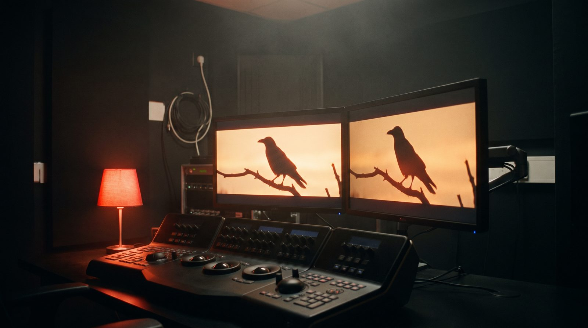

Sergi, konser ve tiyatro takvimi nereden takip edilir

'Bu hafta sonu ne yapılır' sorusu için kaynak listesi: devlet kurumlarının takvimleri, belediye etkinlikleri, ücretsiz sergiler ve bilet sitelerini birlikte okuma yöntemi. Bursa ve İstanbul için ayrıca.
Dört kaynak türü
Sanat takvimi tek yerde toplanmaz; dört kaynağı birlikte okumak gerekir. Birincisi kamu kurumları: Devlet Tiyatroları, Devlet Opera ve Balesi ve Cumhurbaşkanlığı Senfoni Orkestrası kendi sezon programlarını yayımlar, biletler çoğunlukla düşük fiyatlıdır. İkincisi belediyeler: kültür merkezlerinin aylık programları ve ücretsiz konserler belediyenin kültür sayfasında duyurulur. Üçüncüsü özel galeriler ve müzeler: sergi açılışları galerinin kendi sitesinde ve e-bülteninde. Dördüncüsü bilet platformları: ticari konserler ve festivaller için tarih ve fiyat orada kesinleşir.
Ücretsiz etkinlik nasıl bulunur
Belediye konserleri, üniversite etkinlikleri, galeri açılışları ve kütüphane söyleşileri çoğunlukla ücretsizdir ve az duyurulur. Belediyenin kültür sayfasını ve şehirdeki galerilerin sosyal hesaplarını haftada bir taramak yeter. Sanat bölümündeki haftalık sayfamız ücretsiz etkinlikleri ayrıca işaretler; kaynağı ve tarihi olmayan etkinlik listeye girmez.
Bursa ve İstanbul
Bursa'da Tayyare Kültür Merkezi, Merinos Atatürk Kongre ve Kültür Merkezi ile Bursa Devlet Tiyatrosu programları şehrin ana takvimini oluşturur; belediyenin festival dönemleri ayrıca yoğundur. İstanbul için sergi yoğunluğu Beyoğlu-Karaköy hattında ve büyük müzelerdedir; bienal yılında program ayrı takip edilir. Biz her iki şehri birlikte izler, diğer illerden kaynaklı duyuruları da alırız.
Bizim eklediğimiz katman
Sahne ışığı, konser kaydı ve mekân çekimi bizim işimiz. Bu yüzden sanat bölümünde arada "bir sergi nasıl çekilir, bir konser nasıl kaydedilir" yazıları çıkar; etkinliğinizi belgelemek isterseniz nasıl yaptığımızı orada görürsünüz. Etkinliğinizin listeye girmesi için duyurunuzun adresini iletişim sayfasından göndermeniz yeter.
Sık sorulanlar
Ücretsiz konser nereden öğrenilir?
Belediyenin kültür sayfası ve üniversite duyuruları; haftalık sanat sayfamız kaynağıyla işaretler.
Devlet Tiyatrosu biletleri nereden alınır?
Kurumun kendi bilet sistemi üzerinden; program sezon başında yayımlanır.
Etkinliğimi nasıl ekletirim?
Kaynaklı ve tarihli duyuru adresini iletişim sayfasından gönderin.
Kaynaklar
Tarih ve kural bilgisi yalnızca kurumun kendi yayınına dayanır; bir kural değiştiğinde yazı güncellenir ve güncelleme tarihi değişir.